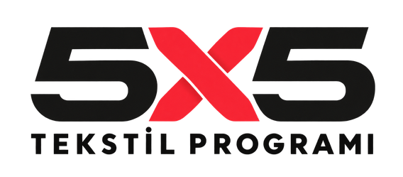

FELİX BUTİK
Hemen farkı hissettik!
Gerçek mağaza deneyimi

BİR ARMONİ PROGRAMIMarkamın potansiyelini test etEKİM 2026 · YALNIZCA 5 MARKA
Uzun süredir aynı ciro bandındaysanız, sorun yalnızca sezon, piyasa veya Meta olmayabilir.
Mevcut reklamlarınız büyümenizi sınırlıyor olabilir.
En çok satan iki ürününüz için reklamları biz hazırlayalım. 5 gün boyunca mevcut reklamlarınızla kendi hesabınızda karşılaştıralım.
Son başvuru: 30 Kasım 2026 · Test reklam bütçesi yaklaşık 10.000 TL’dir ve markanın kendi hesabından kullanılır.
5 GÜN BOYUNCA NEYE BAKIYORUZ?
NEDEN 5x5?
İyi ürünleriniz, mevcut müşterileriniz ve yıllar içinde oluşan marka bilinirliğiniz; reklamlarınız yeterince iyi çalışmasa bile satış üretmeye devam edebilir.
Bu yüzden ciro yapıyor olmanız, reklam sisteminizin markanızı büyüttüğü anlamına gelmez.
Ortalama sipariş tutarınız yükseldiyse, geçen yılla aynı ciro daha az sipariş anlamına gelir.
Bu işaretlerden biri bile reklam sisteminizde incelenmesi gereken bir alan olduğunu gösterebilir.
Rüzgâr karşıdan esiyor olabilir. Ama yelkenleri doğru açmadıysanız bütün sorun rüzgâr değildir.
5x5, büyümenin nerede tıkandığını tahmin etmez; kendi reklam hesabınızda test eder.
AYNI MARKA · İKİ FARKLI DÖNEM
X-Young, Armoni ile büyüdü. Kısa bir ayrılık döneminde farklı ajanslarla çalıştı ve performansının eski seviyelerine döndüğünü anlattı. Yeniden çalışmaya başladığımızda büyüme kaldığı yerden devam etti.
Markanın kendi anlatımıyla.
BAŞVURUDAN SONUÇ GÖRÜŞMESİNE
Başvurudan sonra ne olacağını baştan bilin. Test markanızın kendi reklam hesabında yürütülür; mevcut reklamlarınız kapanmaz ve devam kararı sonuçlardan sonra birlikte verilir.
Başvurunuzu, ürünlerinizi, stok yapınızı ve mevcut reklam performansınızı inceleriz. Programa uygun en fazla 5 markayı seçeriz.
Sezona uygun, stok devamlılığı bulunan ve mevcut satış verisi olan iki ürününüzü belirleriz. Kullanılacak içerikleri, hesap erişimlerini ve test bütçesini hazırlarız.
Seçilen iki ürün için reklamları hazırlar ve kendi Meta hesabınızda gerçek bütçeyle çalıştırırız. Mevcut reklamlarınızı kapatmadan sonuçları takip ederiz.
Tıklama, sepete ekleme, dönüşüm, satın alma maliyeti ve ROAS sonuçlarını mevcut performansınızla karşılaştırırız. Devam kararı yalnızca iki taraf da uygun görürse alınır.
5 günün sonunda ilk performans farklarını ve devam etmeye değip değmediğini kendi verilerinizle değerlendiririz. Yeterli veri oluşmazsa bunu açıkça belirtiriz.
BAŞVURMADAN ÖNCE
Satış yapan ve büyüme potansiyelini test etmek isteyen markalar için beş temel koşul:
Program sıfırdan satışa başlayacak mağazalar için değil; hâlihazırda satış yapan ve karşılaştırılabilir müşteri ve reklam verisi bulunan tekstil veya moda markaları için tasarlanmıştır.
Hazırladığımız reklamları mevcut sonuçlarla karşılaştırabilmemiz için çalışan bir Meta reklam hesabına ve yeterli geçmiş veriye ihtiyaç vardır.
Seçilen ürünlerin test boyunca satışta kalması; stok, fiyat ve teklif koşullarının korunması gerekir.
İki ürün için kullanılabilecek Reels veya dikey video içeriklerine ihtiyaç vardır. Yaklaşık 10.000 TL reklam bütçesi markanın kendi Meta hesabından doğrudan harcanır.
Gerekli hesap erişimleri ve reklam ödeme yöntemi test boyunca aktif tutulmalıdır. Test kampanyalarının yönetimi ve optimizasyonu Armoni tarafından yürütülür. Armoni gerekli değişiklikleri ayrıca onay beklemeden yapabilir; marka veya mevcut ajansı test reklamlarını durduramaz, değiştiremez ya da erişimleri kısıtlayamaz.
Bu beş koşulun tamamı, sonuçların sağlıklı ve karşılaştırılabilir olması için gereklidir.
EKİM 2026 BAŞVURULARI
Beş kısa bilgiyle başvurun. Her ay büyüme potansiyeli ve test koşulları uygun en fazla 5 marka programa kabul edilir.
Başvurunuz uygun bulunursa; ürünleriniz, içerikleriniz, bütçeniz ve reklam hesabınız hazır olduğunda testi başlatırız.
Bu tarihten sonra gelen başvurular bir sonraki ay için değerlendirilir. Başvuru, programa kabul edildiğiniz anlamına gelmez.
AKLINIZDA KALMASIN
Hayır. 5x5; 5 marka, 5 gün ve 5 performans alanını ifade eder.
Herhangi bir metriğin beş kat artacağı veya belirli bir satış sonucuna ulaşılacağı garanti edilmez. Programın amacı, mevcut reklamlarınızın üzerinde gerçek bir gelişme alanı olup olmadığını kendi verilerinizle test etmektir.
Bunu size vaatlerle kanıtlamaya çalışmıyoruz.
Aynı iki ürün için hazırladığımız reklamları kendi reklam hesabınızda gerçek bütçeyle çalıştırıyor ve mevcut performansınızla karşılaştırıyoruz. Daha iyi sonuç üretirsek kendi verilerinizde görürsünüz; üretemezsek bunu da açıkça raporlarız.
Evet. Reklam kurulumu ve beş günlük test yönetimi için Armoni’ye ücret ödemezsiniz.
Program, uzun süreli bir çalışmaya karar vermeden önce iki tarafın birbirini gerçek veriler üzerinden değerlendirmesi için oluşturuldu. Siz çalışma biçimimizi görürsünüz; biz de markanızın uzun vadeli çalışmaya uygun olup olmadığını değerlendiririz.
Meta reklam harcaması bu kapsama dahil değildir.
İki ürünün beş günlük testi için toplam yaklaşık 10.000 TL Meta reklam bütçesi öngörüyoruz.
Net bütçeyi test başlamadan önce ürünleriniz ve mevcut reklam verileriniz üzerinden belirleriz. Reklam bütçesi markanızın kendi Meta hesabından doğrudan Meta’ya harcanır; Armoni bu bütçeyi tahsil etmez.
Evet. Mevcut reklamlarınızı kapatmaz veya değiştirmeyiz. Yalnızca 5x5 için hazırladığımız test kampanyalarını yönetiriz.
Test boyunca bu kampanyaların yönetimi Armoni’ye aittir. Gerekli optimizasyonları ayrıca onay beklemeden yapabiliriz. Marka veya mevcut ajansı test reklamlarını durduramaz, değiştiremez ya da gerekli erişimleri kısıtlayamaz.
Test için aşağıdakilerin hazır olması gerekir:
Hazırladığımız reklamları beş alanda değerlendiririz:
Beş gün, reklamların ilk performans yönünü ve mevcut reklamlara göre oluşturduğu farkı görmek için kullanılır. Uzun vadeli büyüme garantisi değildir. Yeterli veri oluşmazsa bunu açıkça belirtiriz.
Test sonunda mevcut reklamlarınız ile 5x5 reklamlarını aynı ürünler üzerinden karşılaştıran sade bir sonuç raporu sunarız.
Raporda reklam harcaması, tıklama, sepete ekleme, dönüşüm, satın alma maliyeti ve ROAS farkları birlikte gösterilir. Tek bir iyi metriği seçip başarı ilan etmeyiz; satış yolculuğunun tamamını değerlendiririz.
5x5, beş kesintisiz reklam günü üzerinden değerlendirilir.
Marka kaynaklı erişim veya ödeme kesintisinde test durdurulur. Sorun 24 saat içinde çözülür ve veriler hâlâ sağlıklı biçimde karşılaştırılabiliyorsa kalan süreye devam edilir.
Kesintinin 24 saati aşması veya tekrarlanması halinde test sonlandırılır. Yeniden katılım, yeni başvuruya ve uygun kontenjana bağlıdır.
Meta kaynaklı genel kesintilerde veya Armoni kaynaklı teknik bir sorunda eksik kalan süre telafi edilir.
Meta’da o ana kadar harcanan reklam bütçesi marka ile Meta arasındadır. Armoni bu bütçeyi tahsil etmez, iade etmez veya mahsup etmez.
Devam etmek zorunda değilsiniz. Beş günlük test için kurulum veya yönetim ücreti talep etmeyiz.
Meta’ya harcanan bütçe gerçek reklam harcamasıdır ve Armoni’ye ödenmediği için iade kapsamına girmez.
Testin sonunda kampanyalar durdurulur veya iki tarafın ortak kararıyla devam ettirilir.
Hazırlanan reklamlar ve kampanya kurulumları kendi reklam hesabınızda kalır. Uzun süreli çalışma ancak hem marka hem de Armoni uygun görürse başlar.
Başvurunuz uygun bulunduğunda sizinle telefon veya WhatsApp üzerinden iletişime geçeriz.
İki ürün, içerikler, reklam bütçesi, ödeme yöntemi ve gerekli hesap erişimleri hazır olduğunda ay sonunu beklemeden testi planlarız.